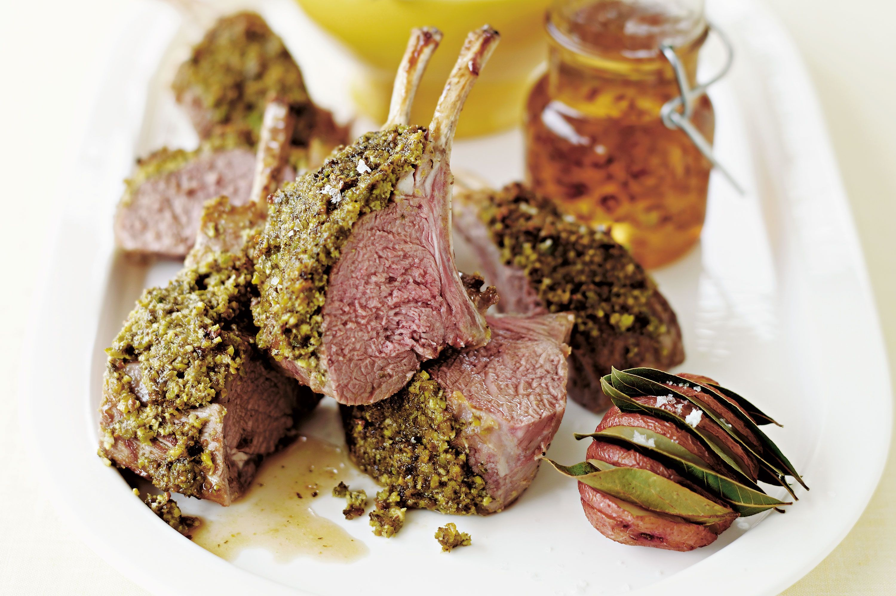

Ingredients
- 2 racks of lamb, trimmed
- 1 teaspoon herbes de Provence
- salt and ground black pepper to taste
- 1 tablespoon vegetable oil
- ⅔ cup chopped pistachio nuts
- 2 tablespoons dry bread crumbh
- 1 tablespoon melted butter
- 1 teaspoon olive oil
- salt and ground black pepper to taste
- 3 tablespoons Dijon mustard
Directions
- Preheat oven to 400 degrees F (200 degrees C). Line a baking sheet with aluminum foil. Generously season each rack of lamb with herbes de Provence, salt, and black pepper.
- Heat oil in a large skillet over high heat. Place lamb in skillet and cook, browning on all sides, 6 to 8 minutes. Transfer lamb to a foil-lined baking sheet; set aside.
- Stir pistachios, bread crumbs, butter, olive oil, and a pinch of salt and black pepper in a bowl. Spread mustard on the fat-side of each rack of lamb. Pat pistachio mixture on top of mustard. Bake in the preheated oven until the crust is golden and lamb is pink in the center, 20 to 25 minutes. Transfer to a plate and let rest 10 minutes before slicing.
Home